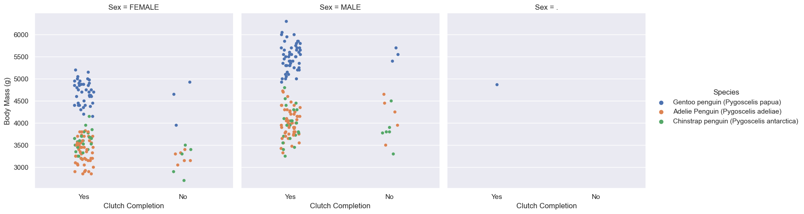
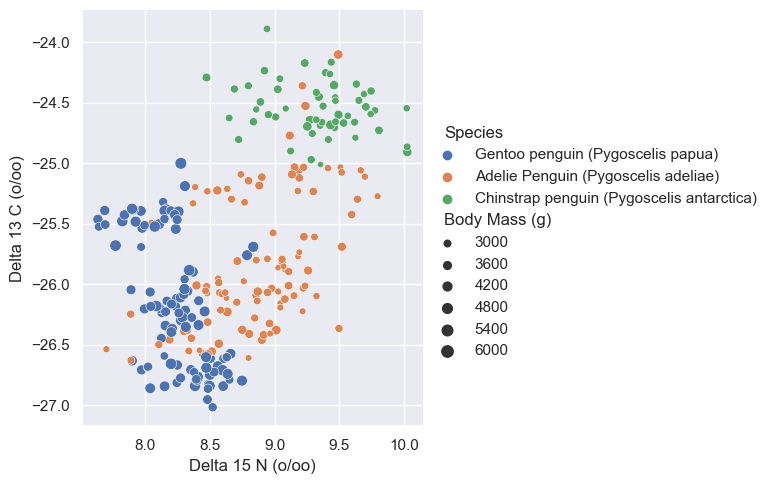
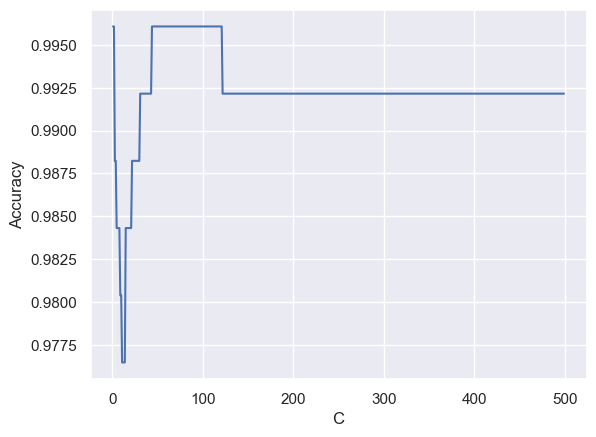
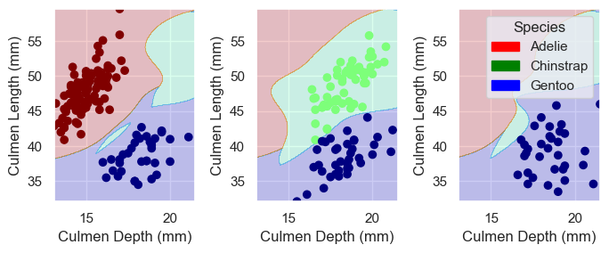

import pandas as pd
train_url = "https://raw.githubusercontent.com/middlebury-csci-0451/CSCI-0451/main/data/palmer-penguins/train.csv"
train = pd.read_csv(train_url)Let’s import the dataset at first.
1. Explore
In this part, I’m going to construct some interesting displayed figures and interesting displayed tables. I will initiate a helpful discussion of both the figure and the table.
Here’s how the data looks:
train.head()| studyName | Sample Number | Species | Region | Island | Stage | Individual ID | Clutch Completion | Date Egg | Culmen Length (mm) | Culmen Depth (mm) | Flipper Length (mm) | Body Mass (g) | Sex | Delta 15 N (o/oo) | Delta 13 C (o/oo) | Comments | |
|---|---|---|---|---|---|---|---|---|---|---|---|---|---|---|---|---|---|
| 0 | PAL0708 | 27 | Gentoo penguin (Pygoscelis papua) | Anvers | Biscoe | Adult, 1 Egg Stage | N46A1 | Yes | 11/29/07 | 44.5 | 14.3 | 216.0 | 4100.0 | NaN | 7.96621 | -25.69327 | NaN |
| 1 | PAL0708 | 22 | Gentoo penguin (Pygoscelis papua) | Anvers | Biscoe | Adult, 1 Egg Stage | N41A2 | Yes | 11/27/07 | 45.1 | 14.5 | 215.0 | 5000.0 | FEMALE | 7.63220 | -25.46569 | NaN |
| 2 | PAL0910 | 124 | Adelie Penguin (Pygoscelis adeliae) | Anvers | Torgersen | Adult, 1 Egg Stage | N67A2 | Yes | 11/16/09 | 41.4 | 18.5 | 202.0 | 3875.0 | MALE | 9.59462 | -25.42621 | NaN |
| 3 | PAL0910 | 146 | Adelie Penguin (Pygoscelis adeliae) | Anvers | Dream | Adult, 1 Egg Stage | N82A2 | Yes | 11/16/09 | 39.0 | 18.7 | 185.0 | 3650.0 | MALE | 9.22033 | -26.03442 | NaN |
| 4 | PAL0708 | 24 | Chinstrap penguin (Pygoscelis antarctica) | Anvers | Dream | Adult, 1 Egg Stage | N85A2 | No | 11/28/07 | 50.6 | 19.4 | 193.0 | 3800.0 | MALE | 9.28153 | -24.97134 | NaN |
Before proceeding forward, I want to see the property of my features, such as if they are numeric or string.
train.info()<class 'pandas.core.frame.DataFrame'>
RangeIndex: 275 entries, 0 to 274
Data columns (total 17 columns):
# Column Non-Null Count Dtype
--- ------ -------------- -----
0 studyName 275 non-null object
1 Sample Number 275 non-null int64
2 Species 275 non-null object
3 Region 275 non-null object
4 Island 275 non-null object
5 Stage 275 non-null object
6 Individual ID 275 non-null object
7 Clutch Completion 275 non-null object
8 Date Egg 275 non-null object
9 Culmen Length (mm) 273 non-null float64
10 Culmen Depth (mm) 273 non-null float64
11 Flipper Length (mm) 273 non-null float64
12 Body Mass (g) 273 non-null float64
13 Sex 265 non-null object
14 Delta 15 N (o/oo) 262 non-null float64
15 Delta 13 C (o/oo) 263 non-null float64
16 Comments 22 non-null object
dtypes: float64(6), int64(1), object(10)
memory usage: 36.6+ KBI also want to explore their distinct values.
cols = ['Region', 'Island', 'Stage', 'Clutch Completion', 'Date Egg', 'Sex', 'Comments']
for col in cols:
print(train[col].unique())['Anvers']
['Biscoe' 'Torgersen' 'Dream']
['Adult, 1 Egg Stage']
['Yes' 'No']
['11/29/07' '11/27/07' '11/16/09' '11/28/07' '11/10/08' '11/12/07'
'11/23/09' '11/16/07' '11/4/08' '11/18/09' '11/19/07' '11/25/08'
'11/17/09' '11/21/07' '11/9/08' '11/15/08' '11/7/08' '11/27/09'
'11/18/07' '11/8/08' '11/11/08' '11/24/08' '11/21/09' '11/22/09'
'11/2/08' '11/9/09' '11/15/09' '12/3/07' '11/26/07' '11/19/09' '11/6/08'
'11/13/07' '11/9/07' '11/13/08' '11/10/09' '11/25/09' '11/20/09'
'11/3/08' '11/30/07' '11/17/08' '11/12/09' '12/1/09' '11/10/07'
'11/11/07' '11/22/07' '11/5/08' '11/15/07' '11/14/08' '11/14/09'
'11/13/09']
[nan 'FEMALE' 'MALE' '.']
[nan 'Nest never observed with full clutch.'
'No blood sample obtained for sexing.' 'Not enough blood for isotopes.'
'Adult not sampled.' 'No blood sample obtained.'
'Nest never observed with full clutch. Not enough blood for isotopes.'
'Sexing primers did not amplify. Not enough blood for isotopes.']We also want to explore all distinct values from those qualitative features. This will help us to choose proper features and draw corresponding tables. For example, as we can see the Region feature only has one distinct value, which might tell us that it is not worthwhile to take it into the consideration.
Then, I want to use the seaborn package to draw some interesting figures. I want to study if Clutch Completion will affect a penguin’s Body Mass. Realizing penguin’s sex might also contribute the difference, I set Sex as another controlling variable.
import seaborn as sns
import numpy as np
sns.set_theme()
sns.catplot(data=train, x="Clutch Completion", y="Body Mass (g)", hue="Species", col="Sex")<seaborn.axisgrid.FacetGrid at 0x2c64960cd60>
The graphs seem to tell that Clutch Completion doesn’t have a strong relationship with the Body Mass. However, it is clear that male penguins tend to be heavier than female penguins.
Besides that, I want to study the quantitative features, Delta 15 N (o/oo) and Delta 13 C (o/oo).
sns.relplot(data=train, x="Delta 15 N (o/oo)", y="Delta 13 C (o/oo)", hue="Species", size="Body Mass (g)")<seaborn.axisgrid.FacetGrid at 0x2c64b8714f0>
It is relatively hard to tell, but it looks like most Gentoo penguins have more “negative” Delta 13 C and Delta 15 N, because we can see lots of blue dots are located in the lower left corner. In contrast, most Chinstrap penguins have more “positive” Delta 13 C and Delta 15 N.
We then want to construct some interesting tables.
train.groupby(["Species", "Island"]).size()Species Island
Adelie Penguin (Pygoscelis adeliae) Biscoe 35
Dream 41
Torgersen 42
Chinstrap penguin (Pygoscelis antarctica) Dream 56
Gentoo penguin (Pygoscelis papua) Biscoe 101
dtype: int64From this table, we can see that all the Chinstrap penguins live in the Dream island and all the Gentoo penguins live in Biscoe island. However, the Adelie penguin lives in all three Islands, including Dream, Biscoe, and Torgersen.
train.groupby(["Species", "Island"])[["Body Mass (g)", "Flipper Length (mm)"]].aggregate([np.mean]).round(2)| Body Mass (g) | Flipper Length (mm) | ||
|---|---|---|---|
| mean | mean | ||
| Species | Island | ||
| Adelie Penguin (Pygoscelis adeliae) | Biscoe | 3648.57 | 188.71 |
| Dream | 3657.32 | 189.63 | |
| Torgersen | 3692.68 | 191.37 | |
| Chinstrap penguin (Pygoscelis antarctica) | Dream | 3717.86 | 195.46 |
| Gentoo penguin (Pygoscelis papua) | Biscoe | 5119.50 | 217.65 |
We are comparing Body Mass and Flipper Length for different penguin species (across different islands). It seems the Gentoo penguin is heavier than the rest two species and also has longer Flipper. Also, as for the Adelie penguin, those which live in the Torgersen tend to have bigger body size and mass.
2. Model
I will find three features of the data and a model trained on those features which achieves 100% testing accuracy. Among those three features, one will be qualitative (like Island or Clutch Completion), and the other two features will be quantitative (like Body Mass (g) or Culmen Depth (mm)).
At first, we need to do some data preparation, such as factoring those qualitative features.
from sklearn.preprocessing import LabelEncoder
le = LabelEncoder()
le.fit(train["Species"])
def prepare_data(df):
df = df.drop(["studyName", "Sample Number", "Individual ID", "Date Egg", "Comments", "Region"], axis = 1)
df = df[df["Sex"] != "."]
df = df.dropna()
y = le.transform(df["Species"])
df = df.drop(["Species"], axis = 1)
df = pd.get_dummies(df)
return df, y
X_train, y_train = prepare_data(train)Here is how the training data looks like:
X_train.head()| Culmen Length (mm) | Culmen Depth (mm) | Flipper Length (mm) | Body Mass (g) | Delta 15 N (o/oo) | Delta 13 C (o/oo) | Island_Biscoe | Island_Dream | Island_Torgersen | Stage_Adult, 1 Egg Stage | Clutch Completion_No | Clutch Completion_Yes | Sex_FEMALE | Sex_MALE | |
|---|---|---|---|---|---|---|---|---|---|---|---|---|---|---|
| 1 | 45.1 | 14.5 | 215.0 | 5000.0 | 7.63220 | -25.46569 | 1 | 0 | 0 | 1 | 0 | 1 | 1 | 0 |
| 2 | 41.4 | 18.5 | 202.0 | 3875.0 | 9.59462 | -25.42621 | 0 | 0 | 1 | 1 | 0 | 1 | 0 | 1 |
| 3 | 39.0 | 18.7 | 185.0 | 3650.0 | 9.22033 | -26.03442 | 0 | 1 | 0 | 1 | 0 | 1 | 0 | 1 |
| 4 | 50.6 | 19.4 | 193.0 | 3800.0 | 9.28153 | -24.97134 | 0 | 1 | 0 | 1 | 1 | 0 | 0 | 1 |
| 5 | 33.1 | 16.1 | 178.0 | 2900.0 | 9.04218 | -26.15775 | 0 | 1 | 0 | 1 | 0 | 1 | 1 | 0 |
After doing some preliminary analysis, I identified those features as the following:
- Qualitative Features:
Island,Clutch Completion, andSex; - Quantitative Features:
Culmen Length (mm),Culmen Depth (mm),Flipper Length (mm),Body Mass (g),Delta 15 N (o/oo), andDelta 13 C (o/oo).
I dropped the Stage feature because it only contains one distinct value, as shown above. Then I can use the itertools to produce all combinations of features. Now I’m going to pick the model for prediction.
from itertools import combinations
from sklearn.linear_model import LogisticRegression
from sklearn.model_selection import cross_val_score
import warnings
warnings.filterwarnings('ignore')
all_qual_cols = ["Island", "Clutch Completion", "Sex"]
all_quant_cols = ['Culmen Length (mm)', 'Culmen Depth (mm)', 'Flipper Length (mm)', 'Body Mass (g)', 'Delta 15 N (o/oo)', 'Delta 13 C (o/oo)']
LR = LogisticRegression()
result = {}
for qual in all_qual_cols:
qual_cols = [col for col in X_train.columns if qual in col ]
for pair in combinations(all_quant_cols, 2):
cols = qual_cols + list(pair)
LR.fit(X_train[cols], y_train)
# convert list to string
feature = " ".join(str(col) for col in cols)
# use cross-validation
cv_scores = cross_val_score(LR, X_train[cols], y_train, cv=5)
mean_score = cv_scores.mean()
result[feature] = mean_score
# just using the score
#result[feature] = LR.score(X_train[cols], y_train)
result{'Island_Biscoe Island_Dream Island_Torgersen Culmen Length (mm) Culmen Depth (mm)': 0.996078431372549,
'Island_Biscoe Island_Dream Island_Torgersen Culmen Length (mm) Flipper Length (mm)': 0.92579185520362,
'Island_Biscoe Island_Dream Island_Torgersen Culmen Length (mm) Body Mass (g)': 0.8475867269984917,
'Island_Biscoe Island_Dream Island_Torgersen Culmen Length (mm) Delta 15 N (o/oo)': 0.9726998491704375,
'Island_Biscoe Island_Dream Island_Torgersen Culmen Length (mm) Delta 13 C (o/oo)': 0.9568627450980391,
'Island_Biscoe Island_Dream Island_Torgersen Culmen Depth (mm) Flipper Length (mm)': 0.8670437405731523,
'Island_Biscoe Island_Dream Island_Torgersen Culmen Depth (mm) Body Mass (g)': 0.8475867269984917,
'Island_Biscoe Island_Dream Island_Torgersen Culmen Depth (mm) Delta 15 N (o/oo)': 0.8398190045248869,
'Island_Biscoe Island_Dream Island_Torgersen Culmen Depth (mm) Delta 13 C (o/oo)': 0.9060331825037707,
'Island_Biscoe Island_Dream Island_Torgersen Flipper Length (mm) Body Mass (g)': 0.7811463046757164,
'Island_Biscoe Island_Dream Island_Torgersen Flipper Length (mm) Delta 15 N (o/oo)': 0.8709653092006032,
'Island_Biscoe Island_Dream Island_Torgersen Flipper Length (mm) Delta 13 C (o/oo)': 0.9491704374057315,
'Island_Biscoe Island_Dream Island_Torgersen Body Mass (g) Delta 15 N (o/oo)': 0.8280542986425339,
'Island_Biscoe Island_Dream Island_Torgersen Body Mass (g) Delta 13 C (o/oo)': 0.8592760180995475,
'Island_Biscoe Island_Dream Island_Torgersen Delta 15 N (o/oo) Delta 13 C (o/oo)': 0.8944193061840121,
'Clutch Completion_No Clutch Completion_Yes Culmen Length (mm) Culmen Depth (mm)': 0.9570889894419305,
'Clutch Completion_No Clutch Completion_Yes Culmen Length (mm) Flipper Length (mm)': 0.9259426847662141,
'Clutch Completion_No Clutch Completion_Yes Culmen Length (mm) Body Mass (g)': 0.8711915535444946,
'Clutch Completion_No Clutch Completion_Yes Culmen Length (mm) Delta 15 N (o/oo)': 0.9298642533936652,
'Clutch Completion_No Clutch Completion_Yes Culmen Length (mm) Delta 13 C (o/oo)': 0.8631975867269984,
'Clutch Completion_No Clutch Completion_Yes Culmen Depth (mm) Flipper Length (mm)': 0.8243589743589743,
'Clutch Completion_No Clutch Completion_Yes Culmen Depth (mm) Body Mass (g)': 0.7655354449472096,
'Clutch Completion_No Clutch Completion_Yes Culmen Depth (mm) Delta 15 N (o/oo)': 0.8007541478129714,
'Clutch Completion_No Clutch Completion_Yes Culmen Depth (mm) Delta 13 C (o/oo)': 0.8751885369532427,
'Clutch Completion_No Clutch Completion_Yes Flipper Length (mm) Body Mass (g)': 0.667948717948718,
'Clutch Completion_No Clutch Completion_Yes Flipper Length (mm) Delta 15 N (o/oo)': 0.820211161387632,
'Clutch Completion_No Clutch Completion_Yes Flipper Length (mm) Delta 13 C (o/oo)': 0.8164404223227752,
'Clutch Completion_No Clutch Completion_Yes Body Mass (g) Delta 15 N (o/oo)': 0.7383861236802413,
'Clutch Completion_No Clutch Completion_Yes Body Mass (g) Delta 13 C (o/oo)': 0.7147812971342383,
'Clutch Completion_No Clutch Completion_Yes Delta 15 N (o/oo) Delta 13 C (o/oo)': 0.7809954751131221,
'Sex_FEMALE Sex_MALE Culmen Length (mm) Culmen Depth (mm)': 0.984389140271493,
'Sex_FEMALE Sex_MALE Culmen Length (mm) Flipper Length (mm)': 0.9181749622926093,
'Sex_FEMALE Sex_MALE Culmen Length (mm) Body Mass (g)': 0.8438914027149321,
'Sex_FEMALE Sex_MALE Culmen Length (mm) Delta 15 N (o/oo)': 0.9415535444947208,
'Sex_FEMALE Sex_MALE Culmen Length (mm) Delta 13 C (o/oo)': 0.9139517345399698,
'Sex_FEMALE Sex_MALE Culmen Depth (mm) Flipper Length (mm)': 0.7813725490196078,
'Sex_FEMALE Sex_MALE Culmen Depth (mm) Body Mass (g)': 0.7812971342383107,
'Sex_FEMALE Sex_MALE Culmen Depth (mm) Delta 15 N (o/oo)': 0.8358974358974358,
'Sex_FEMALE Sex_MALE Culmen Depth (mm) Delta 13 C (o/oo)': 0.9216440422322775,
'Sex_FEMALE Sex_MALE Flipper Length (mm) Body Mass (g)': 0.7422322775263951,
'Sex_FEMALE Sex_MALE Flipper Length (mm) Delta 15 N (o/oo)': 0.7812217194570136,
'Sex_FEMALE Sex_MALE Flipper Length (mm) Delta 13 C (o/oo)': 0.8363499245852187,
'Sex_FEMALE Sex_MALE Body Mass (g) Delta 15 N (o/oo)': 0.7773755656108599,
'Sex_FEMALE Sex_MALE Body Mass (g) Delta 13 C (o/oo)': 0.8047511312217195,
'Sex_FEMALE Sex_MALE Delta 15 N (o/oo) Delta 13 C (o/oo)': 0.7969834087481147}# from IPython.core.interactiveshell import InteractiveShell
# InteractiveShell.ast_node_interactivity = "all"
print("The best features are " + max(result, key = result.get))The best features are Island_Biscoe Island_Dream Island_Torgersen Culmen Length (mm) Culmen Depth (mm)Therefore, we con use those features to construct a model. I’m going to implement a support vector machine model (svm), but first, I need to prepare my test data.
test_url = "https://raw.githubusercontent.com/middlebury-csci-0451/CSCI-0451/main/data/palmer-penguins/test.csv"
test = pd.read_csv(test_url)
X_test, y_test = prepare_data(test)
# normalization
X_test_new =(X_test-X_train.mean())/X_train.std()
X_train_new =(X_train-X_train.mean())/X_train.std()However, I also need to specify which parameters I’m going to choose.
cols = ['Culmen Depth (mm)', 'Culmen Length (mm)', 'Island_Biscoe', 'Island_Dream', 'Island_Torgersen']
from sklearn.svm import SVC
scores_gamma = {}
gammas = 10**np.arange(-5, 5, dtype=float)
for gamma in gammas:
svm = SVC(gamma=gamma)
svm.fit(X_train[cols], y_train)
cv_scores = cross_val_score(svm, X_train[cols], y_train, cv=5)
mean_score = cv_scores.mean()
scores_gamma[gamma] = mean_score
scores_gamma{1e-05: 0.41402714932126694,
0.0001: 0.7616892911010558,
0.001: 0.8790346907993968,
0.01: 0.9805429864253394,
0.1: 0.984389140271493,
1.0: 0.9607843137254901,
10.0: 0.7107088989441931,
100.0: 0.5,
1000.0: 0.4218702865761689,
10000.0: 0.4218702865761689}import matplotlib.pyplot as plt
scores_c = {}
Cs = np.arange(1, 500, 1)
for c in Cs:
svm = SVC(gamma=max(scores_gamma, key = scores_gamma.get), C=c)
svm.fit(X_train[cols], y_train)
cv_scores = cross_val_score(svm, X_train_new[cols], y_train, cv=5)
mean_score = cv_scores.mean()
scores_c[c] = mean_score
lists = sorted(scores_c.items()) # sorted by key, return a list of tuples
x, y = zip(*lists) # unpack a list of pairs into two tuples
plt.plot(x, y)
plt.xlabel('C')
plt.ylabel('Accuracy')Text(0, 0.5, 'Accuracy')
It looks like when Gamma is 0.1 and C is 100, the model will achieve the highest accuracy. Thus, I will just take those as my argument.
%%capture
svm = SVC(gamma =0.1, C=100)
svm.fit(X_train_new[cols], y_train)svm.score(X_test_new[cols], y_test)1.0We can see the svm model still achieves 100% accuracy on the unseen test data, so I will choose that as my final model.
3. Evaluate
Lastly, I will show the decision regions of my finished model, split out by the qualitative feature. Here I’m using the Island as the qualitative feature, which means there will be three different graphs.
from matplotlib.patches import Patch
from matplotlib import pyplot as plt
import numpy as np
def plot_regions(model, X, y):
x0 = X[X.columns[0]]
x1 = X[X.columns[1]]
qual_features = X.columns[2:]
fig, axarr = plt.subplots(1, len(qual_features), figsize = (7, 3))
# create a grid
grid_x = np.linspace(x0.min(),x0.max(),501)
grid_y = np.linspace(x1.min(),x1.max(),501)
xx, yy = np.meshgrid(grid_x, grid_y)
XX = xx.ravel()
YY = yy.ravel()
for i in range(len(qual_features)):
XY = pd.DataFrame({
X.columns[0] : XX,
X.columns[1] : YY
})
for j in qual_features:
XY[j] = 0
XY[qual_features[i]] = 1
p = model.predict(XY)
p = p.reshape(xx.shape)
# use contour plot to visualize the predictions
axarr[i].contourf(xx, yy, p, cmap = "jet", alpha = 0.2, vmin = 0, vmax = 2)
ix = X[qual_features[i]] == 1
# plot the data
axarr[i].scatter(x0[ix], x1[ix], c = y[ix], cmap = "jet", vmin = 0, vmax = 2)
axarr[i].set(xlabel = X.columns[0],
ylabel = X.columns[1])
patches = []
for color, spec in zip(["red", "green", "blue"], ["Adelie", "Chinstrap", "Gentoo"]):
patches.append(Patch(color = color, label = spec))
plt.legend(title = "Species", handles = patches, loc = "best")
plt.tight_layout()# I'm having trouble uploading the decision region graph to the github. So I will just include a screenshot here.
%%capture
svm = SVC(C = 100, gamma = 0.1)
svm.fit(X_train[cols], y_train)
plot_regions(svm, X_train[cols], y_train)UsageError: Line magic function `%%capture` not found.
These graphs are also intuitive, because we already know hat the Gentoo penguin lives in all three islands, and that’s why we can see that there are blue dots in all three graphs. Besides, the use of Culmen Depth and Culmen Length largely improves our model’s performance. Hence, our model can correctly classify different penguin species.